數據可視化工具｜觀念圖解複習
這一章的難處不在觀念深，而在工具名稱多、功能名字像：Matplotlib、pyplot、Pandas 的 .plot()、plt.show() 常一起出現，各管不同的事；Power BI 的報表檢視、資料表檢視、模型檢視也只差兩個字。所以每個工具先放進一張關係圖看清楚誰在底層、誰疊在上面，再整理成可以背的速查表。每個單元照「為什麼需要它 → 一步步搭起來 → 名詞各自定義 → 整合比較表 → 記憶鉤子 → 易錯提醒」排列。
- 單元 ① 的「Python 畫圖函式庫速查表」和單元 ② 的「BI 工具對照表」都用黃框標出來，考前請先背這兩張。
單元 ①Python 畫圖函式庫：Matplotlib 與 pyplot、Seaborn、Plotly／Bokeh、Pandas .plot()
為什麼需要它？ 用 Python 分析完資料，下一步通常是畫成圖給人看。Python 本身沒有內建畫圖功能，要靠別人寫好的「函式庫」（可以想成一盒工具）。畫圖的工具盒有好幾盒，最常被問的是：哪一盒是地基？哪一盒畫互動圖？哪個指令是「畫」、哪個是「顯示」？ 先看懂它們的上下關係，這些問題都能用同一張圖解決。
一步步搭起來：從表格到一張圖
- 先有資料。用 Pandas 把資料裝成一張表（DataFrame），例如三個月的營收 120、150、90。Pandas 是整理表格的工具。
- 畫出來。最基本的畫法是 Matplotlib。通常寫
import matplotlib.pyplot as plt，意思是「把 Matplotlib 裡的 pyplot 子模組叫進來，簡稱 plt」，之後用plt.plot()、plt.bar()畫線、畫長條。 - 顯示出來。在一般的 Python 程式裡，畫好的圖要再呼叫
plt.show()才會跳出視窗；在 Jupyter 筆記本裡，圖通常會自動顯示。畫（plot）和顯示（show）是兩件事。 - 想偷懶。Pandas 的表格自己有 .plot() 方法，一行
df.plot(kind="bar")就能畫，它在底層替你呼叫 Matplotlib。 - 想畫得好看又有統計味。用 Seaborn，例如
sns.histplot(df)畫分布圖，預設配色和樣式比較美觀，它也是疊在 Matplotlib 上。 - 想放到網頁讓人用滑鼠互動。改用 Plotly 或 Bokeh：滑鼠移上去能看數字，可以縮放、平移。它們有自己的一套畫圖引擎，不是疊在 Matplotlib 上。
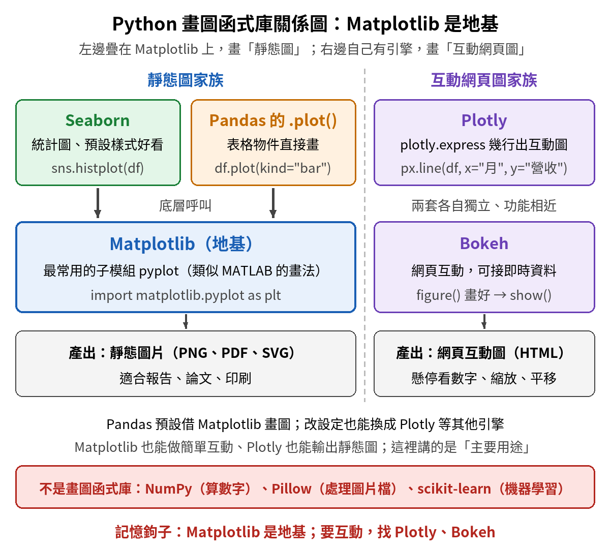
一段完整的小程式長這樣（左邊是程式，右邊是白話說明）：
| 程式 | 白話說明 |
|---|---|
import pandas as pd | 叫進表格工具 Pandas，簡稱 pd |
import matplotlib.pyplot as plt | 叫進畫圖地基的 pyplot，簡稱 plt |
df = pd.DataFrame({"月": ["一月", "二月", "三月"], "營收": [120, 150, 90]}) | 做一張三個月營收的表 |
df.plot(x="月", y="營收", kind="bar") | 用表格自己的 .plot() 畫長條圖 |
plt.show() | 把畫好的圖顯示出來 |
名詞各自定義
Matplotlib
- 是什麼：Python 最基礎、歷史最久的畫圖函式庫，畫的主要是靜態圖（PNG、PDF、SVG 等圖檔）。
- 怎麼運作：提供一套模仿 MATLAB 的畫圖指令（就是 pyplot），也提供比較進階的「物件導向」寫法（
fig, ax = plt.subplots()），可以控制每一條線、每一個刻度。 - 適合：報告、論文、需要精細調整每個細節的圖。
- 優缺點：控制最細、功能最全，很多函式庫都建在它上面；但預設樣式比較陽春，要畫漂亮的統計圖得寫比較多程式碼。
pyplot（matplotlib.pyplot）
- 是什麼：Matplotlib 裡最常用的子模組，提供類似 MATLAB 的快速畫圖介面，習慣簡稱 plt。
- 怎麼運作：它會自動記住「目前這張圖」和「目前這組座標軸」，所以
plt.plot()、plt.title()、plt.show()一行一行寫就能畫完；也可以用plt.gcf()、plt.gca()取得目前的圖和座標軸。 - 容易搞混：matplotlib.style 也是 Matplotlib 的子模組，但它負責的是換整體外觀主題（例如
plt.style.use("ggplot")），不是拿來畫圖的。
plt.show()
- 是什麼：Matplotlib 的「顯示」指令，把目前畫好的圖顯示出來。
- 注意：它是 pyplot 的函式，不是 Pandas 表格的方法。Plotly 的圖物件也有
fig.show()，同樣是「顯示」的意思。記法：plot 是畫，show 是秀出來。
Pandas 的 .plot()
- 是什麼：Pandas 的 DataFrame（表格）和 Series（單一欄）物件內建的畫圖方法，可以直接在資料上呼叫。
- 怎麼運作：預設在底層呼叫 Matplotlib；用 kind= 換圖種，例如 "line"（折線，預設）、"bar"（長條）、"hist"（直方圖）、"scatter"（散佈）。改設定也能換成 Plotly 等其他畫圖引擎。
- 適合：資料分析途中想快速看一眼資料長什麼樣子。
- 優缺點：最省事，一行就有圖；要精細調整時，還是得回到 Matplotlib 的寫法。
Seaborn
- 是什麼：建立在 Matplotlib 之上的統計視覺化函式庫，常簡稱 sns。
- 適合：分布圖、箱形圖、迴歸線、熱圖、多組比較這類統計圖。
- 優點：預設樣式和配色好看；和 Pandas 表格搭配很順，常常一行就畫出 Matplotlib 要好幾行的統計圖。
- 缺點：要做非常細的客製，還是要回頭用 Matplotlib 的指令；它的賣點不是速度，也不是 3D 圖。
Plotly
- 是什麼：做互動式圖表的函式庫，圖可以放在網頁或 Jupyter 裡，滑鼠懸停顯示數值，可縮放、平移。
- 怎麼運作：常用 plotly.express（簡稱 px）的高階寫法，例如
px.line(...)、px.scatter(...)幾行就有互動圖；做網頁儀表板時常搭配同一家的 Dash。 - 優缺點：互動效果好、適合分享到網頁；資料點非常多時可能變慢，要輸出靜態圖檔需另外安裝匯出工具。
Bokeh
- 是什麼：另一套做網頁互動圖的函式庫，和 Plotly 定位相近，兩者是各自獨立的套件。
- 適合：需要在瀏覽器中互動，或接上持續更新的資料（Bokeh 有自己的伺服器功能）。
常被拿來混淆、但不是畫圖函式庫的名字
- NumPy：做數值運算、陣列計算的基礎函式庫。Matplotlib 用它來處理數字，但 NumPy 自己不畫圖。
- Pillow：處理圖片檔（開檔、縮放、裁切、轉格式）的函式庫，不是用來把資料畫成圖表。
- scikit-learn：機器學習函式庫（分類、迴歸、分群），不是畫圖工具。
- .visualize()、.draw()：不是 Pandas 表格的畫圖方法，看到可以直接排除。
整合比較表
Python 畫圖函式庫速查表
| 名稱 | 是什麼 | 靜態／互動 | 什麼時候用 | 一行程式範例 | 口訣 | 容易搞混 |
|---|---|---|---|---|---|---|
| Matplotlib | 最基礎的畫圖函式庫 | 靜態為主 | 報告、論文、要細調 | import matplotlib.pyplot as plt | 地基 | Pandas、NumPy |
| pyplot | Matplotlib 最常用的子模組 | 靜態為主 | 快速畫圖、取得目前的圖 | plt.plot(x, y) | plt 是快捷鍵 | style 子模組 |
| plt.show() | 把畫好的圖顯示出來 | （顯示用） | 一般程式要看到圖時 | plt.show() | show 是秀出來 | Pandas 的 .plot() |
| Pandas .plot() | 表格物件內建的畫圖方法 | 靜態（預設用 Matplotlib） | 分析中快速看一眼 | df.plot(kind="bar") | 表格自己會畫 | .show() |
| Seaborn | 疊在 Matplotlib 上的統計圖函式庫 | 靜態 | 分布、箱形、熱圖 | sns.histplot(df) | 好看的統計圖 | Matplotlib |
| Plotly | 互動式圖表函式庫 | 互動（網頁） | 要懸停、縮放、放網頁 | px.scatter(df, x="a", y="b") | 要互動找 P 和 B | Bokeh |
| Bokeh | 另一套網頁互動圖函式庫 | 互動（網頁） | 瀏覽器互動、即時資料 | show(figure()) | 要互動找 P 和 B | Plotly |
| NumPy／Pillow／scikit-learn | 數值運算／圖片處理／機器學習 | 不是畫圖 | （不是畫圖工具） | 無 | 不是畫圖的 | Matplotlib |
- 「Matplotlib 是地基，pyplot 是它的快捷鍵（plt）。」
- 「Seaborn 和 Pandas 蓋在地基上；要互動，找 Plotly、Bokeh（P 和 B）。」
- 「plot 是畫，show 是秀出來」：表格直接畫圖用 .plot()，plt.show() 負責顯示。
- NumPy 算數字、Pillow 修照片、scikit-learn 做機器學習，三個都不是畫圖工具。
單元 ②BI 工具：Tableau、Power BI、Qlik Sense、Looker Studio
為什麼需要它？ 不是每個人都會寫程式。公司裡的業務、主管想要「每天打開就看得到最新業績」的儀表板，這就是 BI（商業智慧）工具的工作：用拖拉的方式把資料變成互動圖表和儀表板，還能分享給同事。最常見的四套是 Tableau、Power BI、Qlik Sense、Looker Studio，每套都有自己的招牌名詞。
一步步搭起來：四套工具的共同流程
- 連資料：接上 Excel、資料庫、雲端服務。
- 洗資料：刪重複、改格式、合併欄位。
- 建模型：告訴工具「訂單表」和「客戶表」是靠哪個欄位連起來的。
- 拖拉成圖：決定哪個欄位拿來分組、哪個欄位拿來計算。
- 組成儀表板並分享：把幾張圖排在同一頁，發佈出去讓別人看。
下面依工具分開講，每套只記它最有代表性的名詞。
②-1 Tableau：維度、度量與常用功能
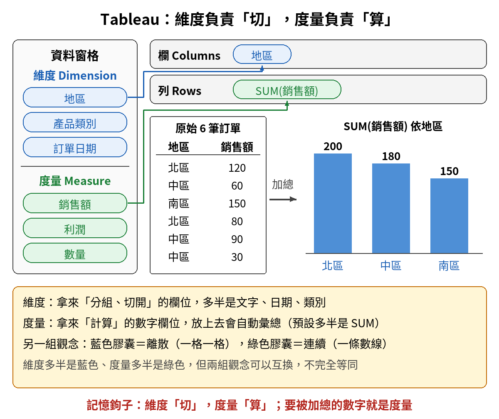
維度 Dimension
- 是什麼：拿來分組、切開資料的欄位，通常是文字、類別、日期，例如地區、產品類別、訂單日期。
- 怎麼運作：放進畫面後，會把資料切成一組一組（北區、中區、南區），決定「畫幾根長條、幾個點」。
度量 Measure
- 是什麼：拿來計算的數字欄位，例如銷售額、利潤、數量。
- 怎麼運作：放進畫面後會自動彙總（預設多半是 SUM 加總，也可改成平均、計數等）。上圖：6 筆訂單依地區加總後，北區 200、中區 180、南區 150。
離散 vs 連續（藍色膠囊 vs 綠色膠囊）
- 是什麼：Tableau 另一組分法：藍色＝離散，一格一格的值（產生標題、分類）；綠色＝連續，一條數線上的值（產生座標軸）。
- 和維度／度量的關係：維度多半是藍色、度量多半是綠色，所以常被混為一談；但兩組觀念可以互換，例如日期可以當離散，也可以當連續。
Tableau 其他常見功能
- 參數 Parameter：讓使用者自己輸入或選擇的一個變數，例如「顯示前 N 名」裡的 N，可以拿來改變計算或篩選。
- 集 Set：從某個維度裡自訂出來的一群成員，例如「前 10 大客戶」，可用來比較「在集合內 vs 不在集合內」。
- 工作表、儀表板、故事：工作表＝一張圖；儀表板 Dashboard＝把多張工作表排在同一頁；故事 Story＝把多張工作表或儀表板排成一連串頁面，像簡報一樣依序說明。
- 地理角色 Geographic Role：把欄位指定成國家、縣市、郵遞區號等，Tableau 會自動配上經緯度，就能畫地圖。
- 表計算 Table Calculation：在畫面上已彙總的結果上再算一次，例如累計加總、佔總和的百分比、排名、和上期的差。
②-2 Power BI：Desktop 三種檢視、Power Query、DAX、量值、Service、書籤
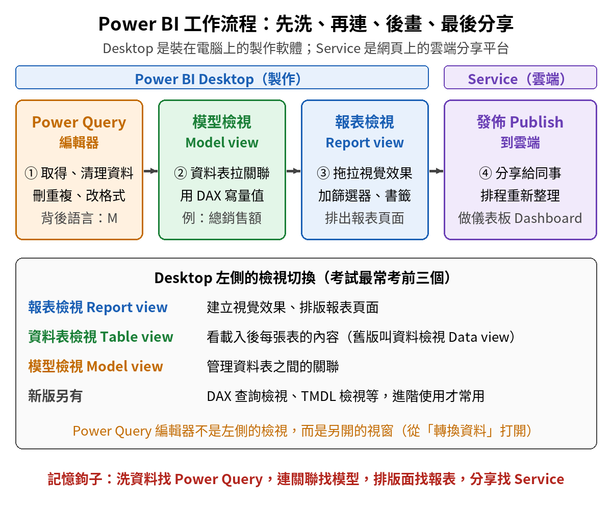
Power BI Desktop 與 Power BI Service
- Desktop：裝在 Windows 電腦上的製作軟體，可以免費下載，用來接資料、建模型、做報表。
- Service：網頁上的雲端平台（powerbi.com）：報表發佈上去後，可以分享給同事、設定排程自動更新資料、把重要圖表釘選成儀表板。分享給別人通常需要相應的付費授權或公司的容量方案，細節依公司方案而定。
Desktop 左側的三種檢視
- 報表檢視 Report view：建立視覺效果、排版報表頁面的畫布，拖拉欄位就出圖。
- 資料表檢視 Table view：查看資料載入後每張表長什麼樣子（舊版名稱叫「資料檢視 Data view」，有些教材仍用舊名）。
- 模型檢視 Model view：管理資料表之間的關聯，例如訂單表的客戶編號連到客戶表。
- 新版另有：DAX 查詢檢視、TMDL 檢視等，偏進階使用；入門最常考的是前三個。
Power Query 編輯器
- 是什麼：Power BI 裡取得資料、清理資料的工具（Excel 裡也有同一套），背後的語言叫 M。
- 注意：它不是左側的「檢視」之一，而是另外打開的視窗（通常按「轉換資料」進入）。
- 適合：刪重複列、拆欄、改資料型別、合併多張表。
DAX（Data Analysis Expressions）
- 是什麼：Power BI 寫計算公式的語言，長得有點像 Excel 函數，例如
總銷售額 = SUM(銷售[小計])。 - 用途：寫「量值」和「計算資料行」。
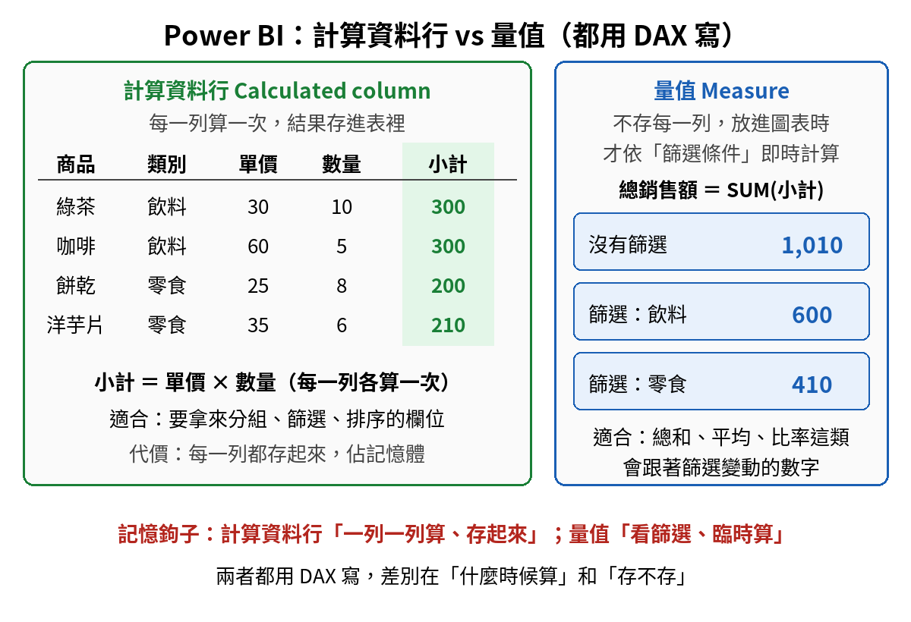
量值 Measure vs 計算資料行 Calculated column
- 計算資料行：每一列各算一次，結果存進表裡，像在 Excel 多加一欄。上圖：小計＝單價 × 數量，四列分別是 300、300、200、210。適合拿來分組、篩選；代價是每列都存，佔記憶體。
- 量值：不存在每一列，放進圖表時才依「目前的篩選條件」即時計算。上圖：總銷售額沒篩選時是 1,010，篩選飲料時是 600、零食是 410。適合總和、平均、比率這類會隨篩選變動的數字。
- 小心名字：Tableau 的「度量 Measure」是一種欄位；Power BI 的「量值 Measure」是一條公式。英文一樣，意思不一樣。
書籤 Bookmarks
- 是什麼：存下報表頁面當下的狀態：套了哪些篩選器、交叉分析篩選器選了什麼、哪些視覺效果顯示或隱藏、排序方式等。
- 用途：一鍵回到某個畫面；搭配按鈕做出「點一下切換畫面」的導覽效果；開會時依序播放，像簡報一樣說故事。
- 容易搞混：它存的是「畫面狀態」，不是收藏圖表類型，也不是在 DAX 公式或資料表上做記號。
②-3 Qlik Sense：關聯引擎
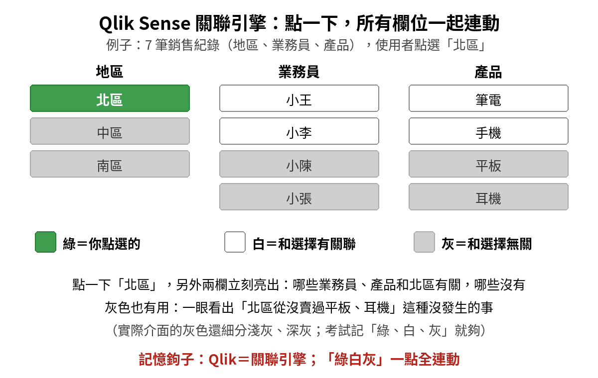
關聯引擎 Associative Engine
- 是什麼：Qlik 的招牌技術：資料載入後，欄位之間的關聯都被記下來，使用者點選任何一個值，所有圖表和清單會同時連動。
- 怎麼看：常用顏色表示：綠＝你點選的，白＝和選擇有關聯，灰＝和選擇無關（被排除）。上圖：點「北區」，業務員剩小王、小李是白色，產品剩筆電、手機是白色，平板和耳機變灰。
- 優點：可以自由探索，不用事先設計好查詢路徑；灰色讓人看見「沒有發生的事」，例如北區從沒賣過平板。
- 常見誤解：Qlik 能連很多種資料來源（不限 Excel），主要靠拖拉介面和自己的載入腳本，不是建立在 Python 上；它能畫地圖，但地理分析不是它的招牌。
②-4 Looker Studio（對照用）
Looker Studio
- 是什麼：Google 的網頁版免費報表與儀表板工具，前身叫 Google Data Studio，2022 年改名。
- 適合：資料本來就在 Google 服務裡的時候，例如 Google 試算表、Google Analytics、BigQuery、Google Ads；分享方式和 Google 文件很像，給連結就能看。
- 容易搞混：Google 另有一套付費的企業級產品叫 Looker，兩者是不同產品。
整合比較表
BI 工具對照表
| 工具 | 開發商 | 招牌特色 | 核心名詞 | 適用情境 | 關鍵差異 | 容易搞混 |
|---|---|---|---|---|---|---|
| Tableau | Tableau（現屬 Salesforce） | 拖拉式視覺探索 | 維度、度量、藍色離散／綠色連續、儀表板、故事 | 要快速探索、做精美互動圖 | 維度切、度量算 | Power BI 的量值 |
| Power BI | Microsoft | 和 Excel、Microsoft 365 整合 | Power Query、DAX、量值、計算資料行、報表／資料表／模型檢視、書籤 | 公司已用微軟產品 | Desktop 製作、Service 分享 | Tableau 的度量 |
| Qlik Sense | Qlik | 關聯引擎 | 點選、綠白灰 | 想自由點選探索關聯 | 一點全連動 | 一般篩選器 |
| Looker Studio | 網頁版、免費 | 資料來源、報表共用 | 資料在 Google 服務裡 | 接 Google 服務最順 | Looker（付費企業版） |
Power BI 常見的五個名詞再並排一次：
| 名詞 | 一句話定義 | 在哪裡 | 關鍵分辨點 | 容易搞混 |
|---|---|---|---|---|
| Power Query 編輯器 | 取得、清理資料 | 另開的視窗（轉換資料） | 洗資料 | 資料表檢視 |
| 資料表檢視（舊稱資料檢視） | 看載入後的表格內容 | Desktop 左側 | 看資料用，不排版 | 報表檢視 |
| 模型檢視 | 管理資料表之間的關聯 | Desktop 左側 | 拉關聯線 | Power Query |
| 報表檢視 | 建立視覺效果、排版面 | Desktop 左側 | 排版面、出圖 | 資料表檢視 |
| 書籤 | 存下頁面當下的狀態 | 報表檢視的書籤窗格 | 存畫面狀態 | 收藏圖表 |
- Tableau：「維度切，度量算」：要被加總的數字就是度量。
- Power BI：「洗資料找 Power Query，連關聯找模型，排版面找報表，分享找 Service」，順序記成「先洗、再連、後畫、最後分享」。
- Power BI 書籤＝「畫面快照」：存篩選、顯示隱藏、排序，拿來切換畫面和說故事。
- Qlik＝關聯引擎，「綠白灰」一點全連動；Looker Studio＝Google 家的免費網頁報表。
單元 ③視覺編碼精確度：位置＞長度＞角度＞面積＞顏色
為什麼需要它？（從零講） 畫圖其實是在做一件事：把數字換成眼睛看得到的東西。數字 40 可以畫成一個比較高的點、一根比較長的長條、一塊比較大的扇形、一個比較大的圓，或一個比較深的顏色。這個「把數字換成視覺屬性」的動作，就叫視覺編碼。問題是，人眼對這些屬性的判斷準確度差很多：比兩根長條誰長很容易；比兩個顏色深淺差幾倍，幾乎猜不出來。所以選圖的第一個原則是：重要的數字，用眼睛最準的方式畫。
一步步搭起來
- 認識「視覺屬性」：常見的有位置（點在刻度上的高度）、長度（長條多長）、角度或斜率（扇形張開多大、線有多斜）、面積（圓或方塊多大）、顏色的飽和度或亮度（多深多淺）。
- 做實驗：1984 年 Cleveland 與 McGill 請受試者看各種圖，判斷「小的是大的幾成」，再比較每種畫法猜錯多少。
- 排出名次：結果大致是位置（共同刻度）最準 → 長度 → 角度／斜率 → 面積 → 顏色飽和度或亮度最不準。原論文把長度和角度放在相近等級，各研究的細節略有差異，常見教材簡化成這個順序。
- 為什麼顏色排最後？① 顏色沒有刻度，沒有「從 0 開始量」的基準線；② 人對深淺的感覺不是等比例的，深一倍不會被看成大一倍；③ 同一個顏色放在不同背景旁邊，看起來的深淺會不一樣。所以顏色很適合看「大致哪裡高、哪裡低」的模式，不適合讀出精確數字。
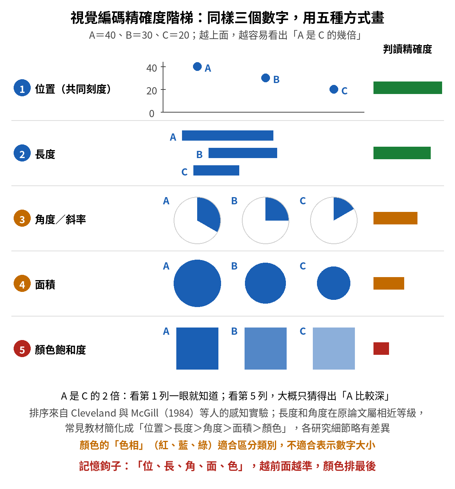
名詞各自定義
位置（共同刻度）Position on a common scale
- 是什麼：數值用「點或長條頂端在同一條刻度上的高度」表示，例如長條圖、點圖、散佈圖。
- 優點：大家共用一條基準線和刻度，比大小、估倍數最準。
長度 Length
- 是什麼：數值用線段或長條的長短表示，但起點未必對齊同一條基準線。
- 注意：堆疊長條圖中間那幾段，起點沒有對齊，主要靠長度判斷，比最下面那段（有對齊）難比較。
角度／斜率 Angle／Slope
- 是什麼：數值用扇形張開的角度（圓餅圖）或線的傾斜程度表示。
- 注意：人對角度的判斷比長度差，所以要精確比較幾個類別的大小，長條圖通常比圓餅圖好讀。
面積 Area
- 是什麼：數值用圓形或方塊的大小表示，例如氣泡圖、Treemap。
- 注意：人通常會低估面積的差距；而且面積要和數值成正比，半徑要開根號（單元 ⑤ 氣泡圖會實算）。
顏色飽和度／亮度 Color saturation／Luminance
- 是什麼：數值用顏色的深淺或鮮豔程度表示，例如熱圖、面量圖（依數值替地圖區塊上色）。
- 適合：看整體模式、找熱點；要讀精確數值時，最好再加上數字標籤。
- 小心：顏色的「色相」（紅、藍、綠這種不同顏色）適合拿來區分類別，不適合表示數字大小。
整合比較表
| 視覺編碼 | 一句話定義 | 精確度 | 常見圖表 | 關鍵分辨點 | 容易搞混 |
|---|---|---|---|---|---|
| 位置（共同刻度） | 點在同一刻度上的高度 | 第 1 名，最準 | 長條圖、點圖、散佈圖 | 有共同基準線 | 長度 |
| 長度 | 線段或長條多長 | 第 2 名 | 堆疊長條的中間段 | 起點未必對齊 | 位置 |
| 角度／斜率 | 扇形開多大、線多斜 | 第 3 名 | 圓餅圖、斜率圖 | 比長度難判斷 | 面積 |
| 面積 | 圓或方塊多大 | 第 4 名 | 氣泡圖、Treemap | 差距常被低估 | 半徑 |
| 顏色飽和度／亮度 | 顏色多深多淺 | 第 5 名，最不準 | 熱圖、面量圖 | 適合看模式，不適合讀數 | 色相（分類用） |
- 「位、長、角、面、色」，越前面越準，顏色排最後。
- 要比大小用長條（位置），要看大致模式才用顏色。理由一句話：顏色沒有刻度，深一倍看起來不像大一倍。
- 色相分類別，深淺才表示大小；但深淺也是最不準的那一種。
單元 ④設計原則：數據墨水比、格式塔、視覺層次、色盲友善
為什麼需要它？ 選對圖種之後，還要把圖「設計得好讀」。這個單元四個觀念各管一件事：墨水該花在哪裡（數據墨水比）、大腦怎麼自動分組（格式塔）、眼睛先看哪裡（視覺層次）、有人看不出紅綠怎麼辦（色盲友善）。
④-1 數據墨水比與圖表垃圾（從零講）
想像一張長條圖：灰色背景、粗格線、黑色外框、立體陰影、每根長條一個顏色、旁邊再放一個圖例。看起來很「豐富」，但讀者真正要看的只有四根長條的高低。統計學家 Edward Tufte 在 1983 年提出一個量化的想法：一張圖用掉的墨水，有多少是真的在呈現數字？這個比例就是數據墨水比。
- 把墨水分兩種：呈現數字本身的叫數據墨水（例如長條本體）；其他的叫非數據墨水（背景、格線、外框、陰影、裝飾）。
- 算比例：數據墨水比＝數據墨水 ÷ 整張圖用掉的全部墨水。
- 實際算一次：下圖用程式數像素：改之前長條佔全部墨水約 22%，改之後約 96%。（這裡為了好算，只把長條本體算成數據墨水。）
- 怎麼改：能刪的裝飾先刪；不能刪的（座標軸、類別名稱）就淡化；需要的數值直接標在長條上，取代圖例和密密的格線。
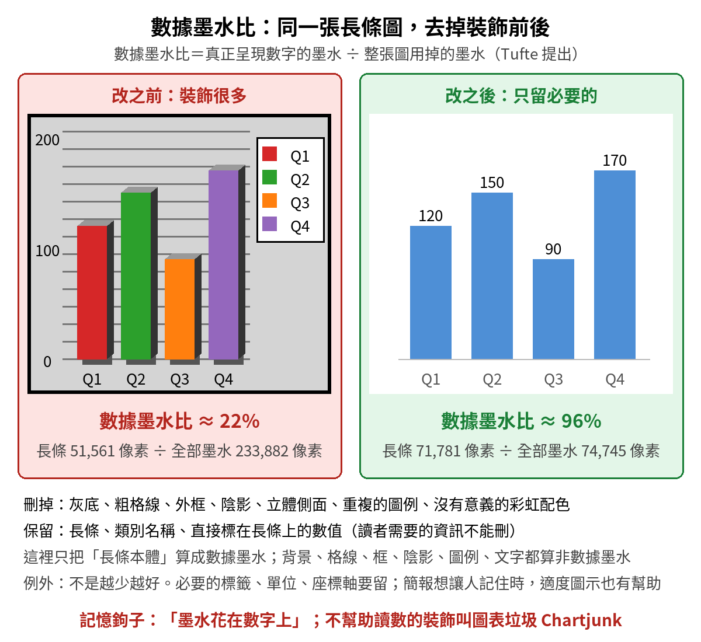
數據墨水比 Data-Ink Ratio
- 是什麼：圖中用來呈現數據本身的墨水 ÷ 整張圖用掉的墨水。Tufte 主張在合理範圍內盡量提高這個比例。
- 怎麼用：刪掉或淡化不幫助讀數的元素，讓注意力集中在數字上。
- 例外：不是越少越好。必要的標題、單位、座標軸、資料標籤要留，否則讀者看不懂；做簡報想讓觀眾記住時，適度的圖示也有幫助，前提是不干擾讀數。
圖表垃圾 Chartjunk
- 是什麼：Tufte 用來稱呼「不傳達資訊、反而干擾閱讀」的裝飾，例如 3D 效果、花紋背景、過多顏色、多餘的外框和陰影。
- 為什麼不好：3D 立體會讓長條的高度難以對準刻度，裝飾越多，眼睛越難找到重點。
④-2 格式塔原則
格式塔（Gestalt）是德文「完整的形狀」。心理學家發現，人看東西時不會一個一個點去看，而是自動把它們組成一個整體。做圖時順著這個傾向排版，讀者不用解說就知道哪些東西是同一組。
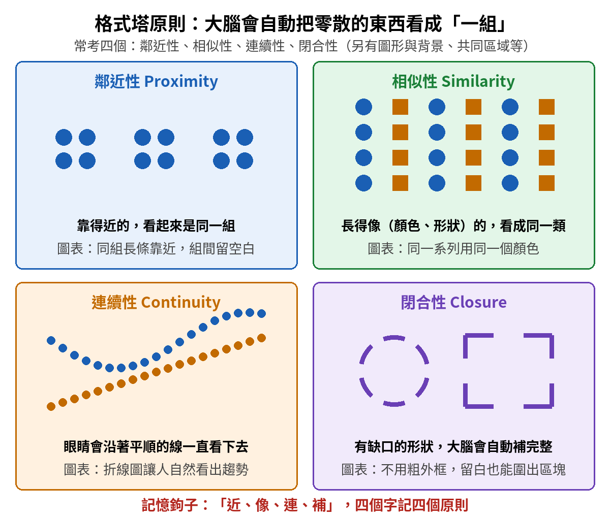
鄰近性 Proximity
- 是什麼：靠得近的東西，會被看成同一組。
- 用在圖表：分組長條圖裡，同一組的長條靠在一起，組與組之間留空白。
相似性 Similarity
- 是什麼：顏色、形狀、大小相似的東西，會被看成同一類。
- 用在圖表：同一個資料系列整條線、所有長條都用同一個顏色。
連續性 Continuity
- 是什麼：眼睛會沿著平順的線或方向一直看下去。
- 用在圖表：折線圖讓人自然看出趨勢；排列整齊的元素讓視線順著走。
閉合性 Closure
- 是什麼：有缺口的形狀，大腦會自動補成完整的形狀。
- 用在圖表：不需要每一區都畫粗外框，用留白和對齊就能圍出區塊。
其他常見原則（補充）
- 圖形與背景：人會自動分出「主角」和「背景」，所以重點用醒目色、其他用灰色。
- 共同區域：被同一個框或底色圍住的東西，會被看成同一組。
- 不是格式塔的：對顏色的敏感度、追蹤移動物體、閱讀文字的習慣，屬於別的視覺或閱讀現象。
④-3 視覺層次：KPI 放左上角
儀表板上有十幾個數字，主管通常只看幾秒鐘。設計時要先決定「誰最重要」，再把它放在眼睛最先看到的地方，這就是視覺層次。
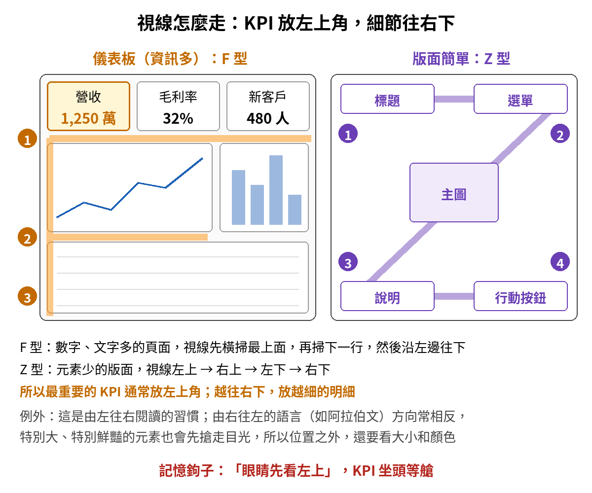
視覺層次 Visual Hierarchy
- 是什麼：用位置、大小、顏色、粗細安排資訊的先後，讓讀者先看到最重要的。
- 怎麼做：最重要的 KPI 放在左上角、字放大；次要的圖表放中間；明細表放下方或右下。
F 型與 Z 型視線
- F 型：閱讀文字、數字很多的頁面時（例如網頁眼動研究），視線常先橫掃最上方，再掃下一行，然後沿左邊往下。
- Z 型：元素少、版面簡單時，視線常沿左上 → 右上 → 左下 → 右下移動。
- 共同點：兩種都從左上角開始，所以 KPI 放左上角最容易先被看到。
- 例外：這是由左往右閱讀的習慣；由右往左的語言（如阿拉伯文）方向常相反。特別大、特別鮮豔的元素也會先搶走目光。
KPI 關鍵績效指標
- 是什麼：Key Performance Indicator，衡量目標有沒有達成的少數關鍵數字，例如營收、毛利率、新客戶數。
- 儀表板原則：一頁放少數幾個 KPI 就好，放在最先被看到的位置，必要時加上和目標或上期的比較。
④-4 色盲友善配色
有一部分的人分不清某些顏色，最常見的是紅綠色盲：紅色和綠色看起來都像暗黃褐色。如果圖表用紅、綠區分「虧損、獲利」或「今年、去年」，他們就看不出差別。下圖用色覺模擬矩陣逐像素換算，色差 ΔE（數字越小越難分）從約 107 掉到約 4，紅綠幾乎變成同一色；藍＋橘則維持約 120 以上。
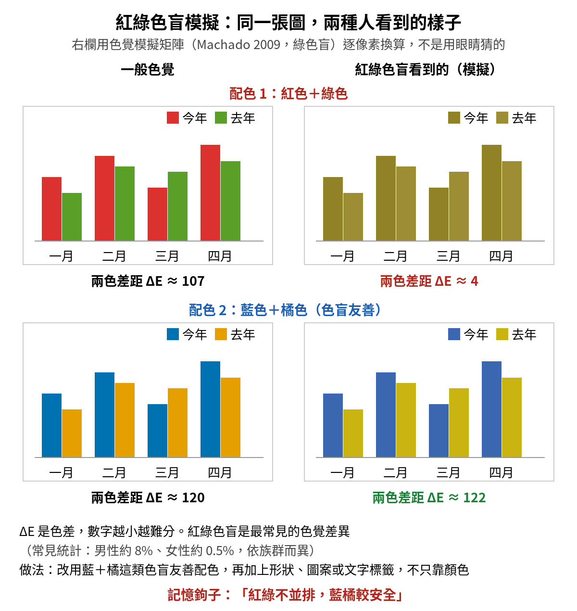
紅綠色盲 Red-green color vision deficiency
- 是什麼：對紅色或綠色的感光比較弱或缺少，分成偏紅弱（第一型）和偏綠弱（第二型），都會讓紅和綠難以分辨。
- 有多常見：是最常見的色覺差異。常見統計是男性約 8%、女性約 0.5%（以北歐血統族群的研究為主，其他族群比例不同）。
藍黃色盲（對照用）
- 是什麼：分不清藍和黃（第三型），比紅綠色盲少見很多。
色盲友善的做法
- 換配色：用藍＋橘這類在色盲模擬下仍分得開的組合，或使用專為色盲設計的色盤。
- 不只靠顏色：再加上形狀、線型（實線／虛線）、圖案或直接標文字，讓沒有顏色也看得懂。
- 檢查：做完用色盲模擬工具看一次，或轉成灰階看是否還分得出來。
整合比較表
| 名詞 | 一句話定義 | 特性 | 適用情境 | 關鍵分辨點 | 容易搞混 |
|---|---|---|---|---|---|
| 數據墨水比 | 呈現數據的墨水 ÷ 全部墨水 | Tufte 提出；合理範圍內越高越好 | 圖太花、裝飾太多 | 刪裝飾，不刪必要標籤 | 「文字越少越好」 |
| 圖表垃圾 | 不傳達資訊的裝飾 | 3D、花紋、多餘顏色 | 檢查要刪什麼 | 干擾讀數的裝飾 | 必要的座標軸 |
| 格式塔原則 | 大腦自動把元素組成整體 | 近、像、連、補 | 排版、分組、配色 | 看成「一組」的傾向 | 顏色敏感度 |
| 視覺層次 | 安排資訊被看到的先後 | 位置、大小、顏色 | 儀表板版面 | KPI 放左上 | 放正中央 |
| F 型／Z 型 | 眼睛掃描頁面的路線 | 都從左上開始 | 資訊多用 F、簡單用 Z | 由左往右閱讀的習慣 | 由右往左的語言 |
| 紅綠色盲 | 紅和綠難以分辨 | 最常見的色覺差異 | 選配色時 | 紅＋綠不要用來區分 | 藍黃色盲（少見） |
- 數據墨水比：「墨水花在數字上」，刪掉不幫助讀數的裝飾，但必要的標籤要留。
- 格式塔：「近、像、連、補」：鄰近、相似、連續、閉合。
- 「眼睛先看左上」，KPI 坐頭等艙。
- 「紅綠不並排，藍橘較安全」，再加上形狀或文字，不只靠顏色。
單元 ⑤圖表選擇：瀑布圖、Treemap、氣泡圖與常見圖表
為什麼需要它？ 同一份資料可以畫成很多種圖，但每種圖擅長回答的問題不一樣。選圖的順序是：先問「我想讓人看懂什麼問題」，再挑圖，而不是先挑一個好看的圖。常見的考法是描述一種資料或一個問題，要你說出該用哪種圖。
一步步搭起來
- 說出問題：是比大小？看趨勢？看組成？看關係？看分布？還是看地點？
- 對照地圖選圖：下圖是十種常見問題和常見選法，不是唯一答案。
- 套用單元 ③ ④：選定圖種後，再檢查：重要數字是不是用位置或長度畫？有沒有多餘裝飾？配色色盲看得出來嗎？
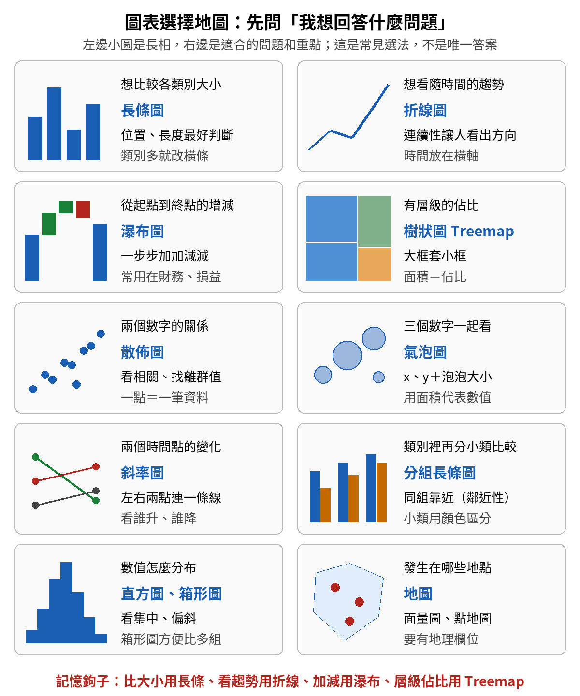
三種比較少見、卻常被問到的圖，實際畫一次：
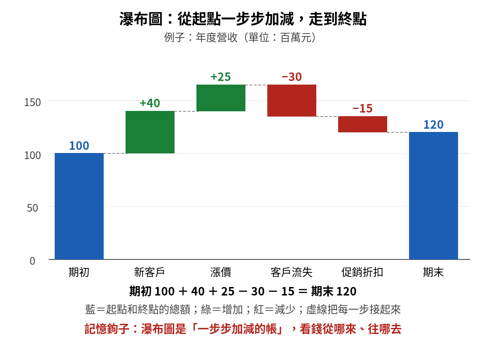
數字由程式實算：期初 100 ＋ 40 ＋ 25 － 30 － 15 ＝ 期末 120。每一根浮在空中的長條，起點都接在前一步的終點。
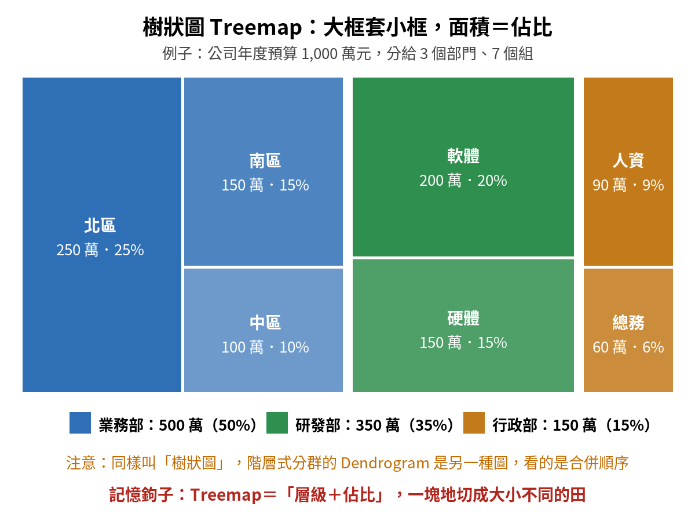
用 squarify 演算法切分：每一塊的面積佔比和預算佔比一致（例如北區 250 萬＝25% 的面積），七塊加起來是 100%。
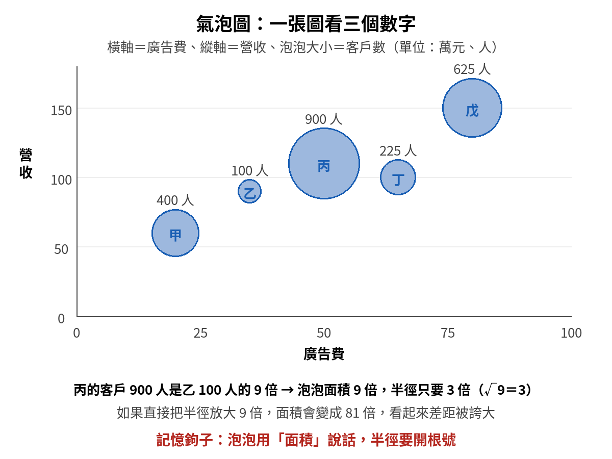
名詞各自定義
瀑布圖 Waterfall Chart
- 是什麼：呈現一個起始值經過一連串增加和減少，最後變成結束值的過程。起點和終點畫成完整的長條，中間每一步是浮在空中的一段。
- 適合：損益說明（營收怎麼變成淨利）、預算增減、現金流、人數增減。
- 優缺點：一眼看出「是哪一步讓數字變多或變少」；但步驟太多會擠，正負數交錯時要用顏色清楚區分。
樹狀圖 Treemap
- 是什麼：用大框套小框的方塊表示有層次結構的資料，每塊的面積代表它佔整體的比例。
- 適合：部門底下有各組的預算、商品大類底下有小類的銷售、硬碟各資料夾佔用的空間。
- 優缺點：空間利用率高，可以同時看層級和佔比；但面積不容易精確比較（單元 ③），類別太多時小方塊會擠到看不清。
- 小心同名：中文也叫「樹狀圖」的 Dendrogram 是階層式分群畫出來的分枝圖（L22302 單元 ④），看的是合併順序，和 Treemap 是不同的圖。
氣泡圖 Bubble Chart
- 是什麼：散佈圖的延伸：橫軸、縱軸各一個數字，泡泡大小再表示第三個數字（顏色還可以表示第四個）。
- 重點：泡泡要用面積對應數值。上圖丙的客戶 900 人是乙 100 人的 9 倍，面積是 9 倍，半徑只要 3 倍；直接把半徑放大 9 倍，面積會變 81 倍，誇大差距。
散佈圖 Scatter Plot
- 是什麼：每一筆資料是一個點，看兩個數字之間的關係（例如廣告費和營收）。
- 適合：看相關、看分群、找離群值。
斜率圖 Slope Chart
- 是什麼：左右兩條直軸代表兩個時間點，同一類別在兩邊各一個點，用直線連起來。
- 適合：比較很多類別在兩個時間點之間誰升、誰降，看線的斜率就知道。
分組長條圖 vs 堆疊長條圖
- 分組長條圖：每個大類下面的小類並排，適合比較小類之間的大小（運用鄰近性）。
- 堆疊長條圖：小類往上疊成一根，適合看「總量＋組成」；但中間的段落沒有對齊基準線，比較難精確比較（單元 ③）。
直方圖、箱形圖、圓餅圖（對照用）
- 直方圖：把數值切成區間，數每區有幾筆，看分布形狀。
- 箱形圖：用中位數、四分位數、極端值摘要分布，方便並排比較多組。
- 圓餅圖：看少數幾類佔整體的比例；類別多或要精確比較時，長條圖通常更好讀。
整合比較表：什麼問題 → 用什麼圖
| 想回答的問題 | 常見圖表 | 定義 | 適用情境 | 關鍵差異 | 容易搞混 |
|---|---|---|---|---|---|
| 各類別誰大誰小 | 長條圖 | 長條高度表示數值 | 業績排名 | 位置、長度最準 | 圓餅圖 |
| 隨時間怎麼變 | 折線圖 | 點連成線看趨勢 | 月營收 | 時間放橫軸 | 斜率圖 |
| 從起點到終點怎麼加減 | 瀑布圖 | 起點、一步步增減、終點 | 損益、預算增減 | 浮在空中的長條 | 堆疊長條圖 |
| 有層級的佔比 | 樹狀圖 Treemap | 大框套小框，面積＝佔比 | 部門與各組預算 | 層級＋佔比 | Dendrogram |
| 兩個數字的關係 | 散佈圖 | 一點一筆資料 | 廣告費與營收 | 看相關、離群值 | 氣泡圖 |
| 三個數字一起看 | 氣泡圖 | x、y＋泡泡大小 | 產品比較 | 面積代表第三個數字 | 散佈圖 |
| 兩個時間點誰升誰降 | 斜率圖 | 左右兩點連一條線 | 去年 vs 今年排名 | 看兩個時間點 | 折線圖 |
| 大類裡的小類比較 | 分組長條圖 | 小類並排 | 各區各產品 | 並排不疊 | 堆疊長條圖 |
| 數值怎麼分布 | 直方圖、箱形圖 | 區間次數／五數摘要 | 成績分布 | 看形狀、比多組 | 長條圖 |
| 發生在哪裡 | 地圖 | 依地點上色或標點 | 各縣市門市 | 需要地理欄位 | Treemap |
| 誰和誰有連結 | 網絡圖 | 點是對象、線是關係 | 社群網路分析 | 看連結，不看佔比 | Treemap |
- 瀑布圖＝「一步步加減的帳」：看錢從哪來、往哪去。
- Treemap＝「層級＋佔比」，一塊地切成大小不同的田；它不是分群用的 Dendrogram。
- 氣泡圖用「面積」說話，半徑要開根號。
- 比大小用長條、看趨勢用折線、加減用瀑布、層級佔比用 Treemap。
總整理本章要記的十句話
- Matplotlib 是 Python 畫圖的地基，最常用的子模組是 pyplot（
import matplotlib.pyplot as plt）。 - Seaborn 疊在 Matplotlib 上，優勢是預設樣式好看、畫統計圖方便；賣點不是速度，也不是 3D。
- 要互動、能在網頁懸停縮放，常見選擇是 Plotly 或 Bokeh。
- 表格直接畫圖用 df.plot()；plt.show() 負責把圖顯示出來。plot 是畫，show 是秀出來。
- Tableau：維度拿來切、度量拿來算；要被加總的數值欄位就是度量。
- Power BI：洗資料找 Power Query、連關聯找模型檢視、排版面找報表檢視、分享找 Service；書籤存的是畫面狀態。
- Qlik Sense 的招牌是關聯引擎，綠白灰一點全連動；Looker Studio 是 Google 的免費網頁報表工具。
- 視覺編碼精確度：位置＞長度＞角度＞面積＞顏色，顏色飽和度最不適合比大小。
- 數據墨水比：墨水花在數字上，刪掉不幫助讀數的裝飾；格式塔：近、像、連、補；KPI 通常放左上角。
- 紅綠色盲分不清紅和綠，改用藍＋橘並加上形狀或文字；瀑布圖看加減過程、Treemap 看層級佔比、氣泡圖用面積表示第三個數字。
考前速查全章名詞總彙整表
把五個單元的比較表濃縮成一張。複習時遮住右邊三欄，看名詞說得出定義，再對照。
| 名詞 | 一句話定義 | 口訣 | 容易跟誰搞混 |
|---|---|---|---|
| 單元 ① Python 畫圖函式庫 | |||
| Matplotlib | 最基礎的畫圖函式庫，靜態圖為主 | 地基 | Pandas、NumPy |
| pyplot | Matplotlib 最常用的子模組，類似 MATLAB | plt 是快捷鍵 | style 子模組 |
| plt.show() | 把畫好的圖顯示出來 | show 是秀出來 | .plot() |
| Pandas .plot() | 表格物件內建的畫圖方法，底層預設用 Matplotlib | 表格自己會畫 | .show() |
| Seaborn | 疊在 Matplotlib 上的統計圖函式庫 | 好看的統計圖 | Matplotlib |
| Plotly／Bokeh | 網頁互動圖函式庫 | 要互動找 P 和 B | Matplotlib |
| NumPy／Pillow／scikit-learn | 數值運算／圖片處理／機器學習 | 不是畫圖的 | Matplotlib |
| 單元 ② BI 工具 | |||
| 維度（Tableau） | 拿來分組、切開的欄位 | 維度切 | 度量 |
| 度量（Tableau） | 拿來計算、自動彙總的數字欄位 | 度量算 | 維度 |
| 藍色／綠色膠囊（Tableau） | 藍＝離散，綠＝連續 | 藍一格格、綠一條線 | 維度／度量 |
| 儀表板／故事（Tableau） | 多張圖排一頁／多頁依序說明 | 故事像簡報 | 工作表 |
| Power Query 編輯器 | 取得、清理資料 | 先洗 | 資料表檢視 |
| 模型檢視 | 管理資料表之間的關聯 | 再連 | Power Query |
| 報表檢視 | 建立視覺效果、排版報表頁面 | 後畫 | 資料（表）檢視 |
| DAX | Power BI 的計算公式語言 | 像 Excel 函數 | M 語言 |
| 量值 vs 計算資料行 | 看篩選臨時算／每列算好存起來 | 量值臨時算 | Tableau 的度量 |
| Power BI Service | 雲端發佈、分享、排程更新 | 最後分享 | Desktop |
| 書籤（Power BI） | 存下報表頁面當下的狀態 | 畫面快照 | 收藏圖表 |
| 關聯引擎（Qlik） | 點一個值，所有欄位綠白灰連動 | 一點全連動 | 一般篩選器 |
| Looker Studio | Google 的免費網頁報表工具 | 接 Google 最順 | Looker |
| 單元 ③ 視覺編碼 | |||
| 視覺編碼 | 把數字換成位置、長度、顏色等視覺屬性 | 數字變成看得到的 | 圖表類型 |
| 精確度排序 | 位置＞長度＞角度＞面積＞顏色 | 位、長、角、面、色 | 順序看反 |
| 顏色飽和度／亮度 | 最不適合比大小的編碼 | 顏色沒有刻度 | 色相（分類用） |
| 單元 ④ 設計原則 | |||
| 數據墨水比 | 呈現數據的墨水 ÷ 全部墨水 | 墨水花在數字上 | 文字越少越好 |
| 圖表垃圾 | 不傳達資訊的裝飾 | 3D、陰影、花紋 | 必要標籤 |
| 格式塔原則 | 大腦把零散元素看成整體 | 近、像、連、補 | 顏色敏感度 |
| 視覺層次／F 型 | 安排先後；視線從左上開始 | KPI 坐頭等艙 | 放正中央 |
| 紅綠色盲 | 紅和綠難分辨，最常見 | 紅綠不並排 | 藍黃色盲 |
| 單元 ⑤ 圖表選擇 | |||
| 瀑布圖 | 起始值經一連串增減到結束值 | 一步步加減的帳 | 堆疊長條圖 |
| 樹狀圖 Treemap | 有層級的資料，面積＝佔比 | 層級＋佔比 | Dendrogram |
| 氣泡圖 | x、y＋泡泡大小表示三個數字 | 面積說話、半徑開根號 | 散佈圖 |
| 斜率圖 | 兩個時間點之間誰升誰降 | 左右兩點連線 | 折線圖 |
| 分組長條圖 | 小類並排比較 | 並排不疊 | 堆疊長條圖 |
動手練自我檢測 10 題
自編情境練習，練的是「看情境選工具、選圖」。先自己想好答案，再點「看答案」。
- 你要做一張散佈圖放在公司內部網頁上，希望同事把滑鼠移到點上就看到客戶名稱，還能放大局部。用 Python 的話，常見會選哪兩個函式庫之一？
看答案
Plotly 或 Bokeh。兩者都能做網頁互動圖（懸停顯示資訊、縮放、平移）；Matplotlib、Seaborn 主要畫靜態圖。
- 你已經把每月營收整理成 Pandas 表格 df，想用最少的程式碼畫出折線圖。要呼叫哪個方法？如果寫在一般 Python 程式（不是 Jupyter）裡，圖沒有跳出來，還要補哪一行？
看答案
df.plot()（折線是預設，也可以寫 kind="line"）。一般程式裡要再補 plt.show() 把圖顯示出來；plot 是畫，show 是秀出來。
- 同事說：「Seaborn 是 Matplotlib 的升級版，所以速度比較快。」這句話哪裡不對？Seaborn 真正的優勢是什麼？
看答案
Seaborn 疊在 Matplotlib 上，底層還是呼叫 Matplotlib，一般不會比較快。它的優勢是預設樣式好看、畫統計圖方便。
- 在 Tableau 裡，「門市名稱」和「來客數」兩個欄位，各自通常屬於維度還是度量？
看答案
門市名稱＝維度（拿來分組）；來客數＝度量（拿來加總或平均）。
- 在 Power BI 裡，你要先把日期格式統一、刪掉重複的列，應該在哪裡做？做完後要把圖表拖到頁面上排版，又要切到哪一個檢視？
看答案
Power Query 編輯器負責清理資料；排版圖表要切到報表檢視。
- 主管想在 Power BI 報表上按一個按鈕，就在「只看北區」和「全國」兩種畫面之間切換。可以用什麼功能做到？
看答案
書籤＋按鈕。書籤存下「只看北區」和「全國」兩種畫面狀態（篩選、顯示的視覺效果），按鈕負責切換。
- 要讓主管精確比較 5 家分店的業績大小，用圓餅圖還是長條圖比較好？請用視覺編碼的排序說明理由。
看答案
長條圖。長條圖用位置／長度表示數值，排在精確度最前面；圓餅圖用角度，比較難判斷差多少。
- 一張長條圖有深灰背景、粗格線、立體陰影、每根長條不同顏色，旁邊還有圖例。用數據墨水比的觀念，你會怎麼改？哪些東西不能刪？
看答案
刪掉灰底、粗格線、立體陰影；改成同一個顏色；把數值直接標在長條上，取代圖例。不能刪的是座標軸或類別名稱、單位、必要的標題。
- 業務報表用紅色表示「未達標」、綠色表示「達標」，並排在一起。可能有什麼問題？怎麼改？
看答案
紅綠色盲的人可能分不出達標和未達標。改用藍＋橘這類色盲友善配色，並加上符號（例如勾和叉）或「達標、未達標」文字標籤，不只靠顏色。
- 想說明「期初現金 500 萬，經過營收、成本、稅金，最後剩多少」，用什麼圖？若改成泡泡圖表示客戶數，A 的客戶數是 B 的 4 倍，A 的泡泡半徑應是 B 的幾倍？
看答案
瀑布圖。泡泡用面積表示數值，客戶數 4 倍＝面積 4 倍，半徑是 √4＝2 倍。